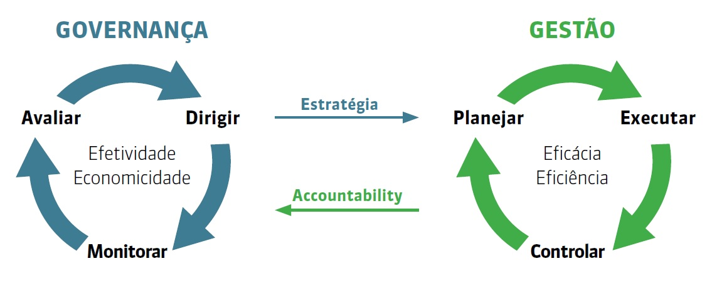

Início da Gestão do Conhecimento |
 Início deste Repositório |
 Baixar em PDF |
Para implementar e manter a gestão das aquisições para as contratações previstas no plano anual de contratações (PACONT), bem como demais contratações não previstas inicialmente nesse plano, será adotado nos processos de trabalho abaixo, sempre que possível, o modelo proposto pelo TCU para governança e gestão no setor público:
[^BRASIL-TCU-2024]
Figura: Modelo de governança e gestão no setor público

Fonte: TCU (2024).
| Código do Processo de trabalho |
Nome do Processo de Trabalho | Evento Inicial | Evento Final | Anotações |
|---|---|---|---|---|
| PTADM-GA-001 | Planejar Gestão das Aquisições | - | - | - |
| PTADM-GA-002 | Executar Atos Preparatórios das Aquisições | - | - | - |
| PTADM-GA-003 | Controlar Aquisições | - | - | - |
| PTADM-GA-004 | Prestar Contas da Gestão das Aquisições | - | - | - |
Art. 32. Além das diretrizes desta Resolução, garantida a compatibilidade normativa, as contratações de Solução de Tecnologia da Informação e Comunicação seguirão o disposto em normas específicas deste Tribunal sobre a matéria, bem como o disciplinamento do CNJ
Resolução CNJ nº 468/2022 - Dispõe sobre DIRETRIZES para as contratações de Solução de Tecnologia da Informação e Comunicação pelos órgãos submetidos ao controle administrativo e financeiro do Conselho Nacional de Justiça
Este material está sob licença especificada no arquivo LICENCE. Esta licença permite que outros remixem, adaptem e criem a partir do seu trabalho para fins não comerciais, DESDE QUE atribuam o devido crédito ao autor (Daniel Claudino) e que licenciem as novas criações sob termos idênticos.

A Gestão do Conhecimento de Daniel Claudino está licenciado com uma Licença Creative Commons - Atribuição-NãoComercial 4.0 Internacional.
[^BRASIL-TCU-2024]: BRASIL. TRIBUNAL DE CONTAS DA UNIÃO. Governança no Setor Público. Disponível em: https://portal.tcu.gov.br/governanca/governancapublica/governanca-no-setor-publico/ Acesso em: 21 jan. 2024